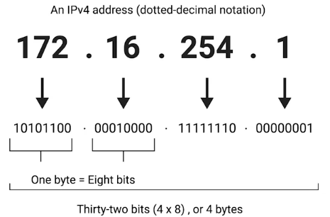
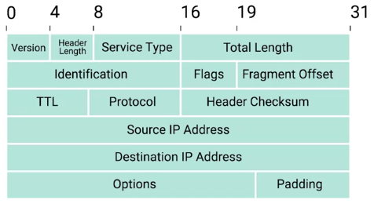
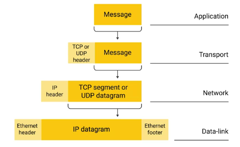
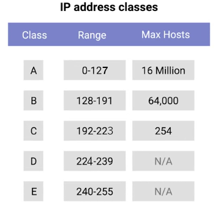
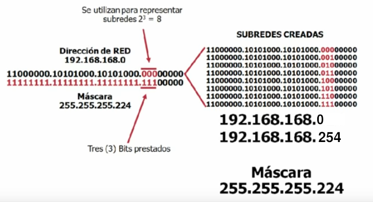
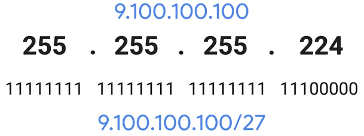

La capa de red
Direcciones IP
Las direcciones IP (Internet Protocol) tienen números de 32 bits compuestos por 4 octetos y cada octeto se describe normalmente
en números decimales. Ocho bits de datos, o un solo octeto, pueden representar todos los números decimales
del 0 al 255. Este formato se conoce como notación decimal con puntos.

Es importante enfatizar que las direcciones IP pertenecen a las redes, no a los dispositivos conectados a esas
redes. De esta forma, tu laptop siempre tendrá la misma dirección MAC, no importa donde la utilices. Pero una
dirección IP asignada en un cibercafé será diferente a la que tendría tu laptop si estuvieras en casa.
Puedes conectar un nuevo dispositivo en cualquiera de las redes modernas, y se le asignará una dirección IP
automáticamente a través de una tecnología conocida como Protocolo de configuración dinámica de
host (DHCP). Una dirección IP asignada de esta manera se conoce como una dirección
IP dinámica. Lo contrario de esto se conoce como una dirección IP estática, la
que debe configurarse en un nodo de manera manual. En la mayoría de los casos, las direcciones IP estáticas
están reservadas para servidores y dispositivos de red, mientras que las IP dinámicas están reservadas para los
clientes. Sin embargo, existen ciertas situaciones en las que esto no es del todo cierto.
Datagramas de IP y encapsulación
En virtud del protocolo IP, a un paquete se lo conoce, por lo general, como un datagrama IP. Las dos secciones
principales de un datagrama IP son el encabezado y la carga útil.

• El primer campo es de 4 bits, e indica qué versión de protocolo de Internet se está
utilizando. La versión más común de IP es la versión cuatro o IPv4.
• Después del campo de versión, tenemos el campo de longitud de encabezado. Este también es un
campo de 4 bits que muestra qué tan largo es todo el encabezado. Casi siempre tiene una longitud de 20 bytes
cuando se trata de IPv4. De hecho, 20 bytes es la longitud mínima de un encabezado IP.
• A continuación, tenemos el campo Tipo de servicio. Estos 8 bits pueden usarse para
especificar detalles sobre la calidad de servicio o las tecnologías QoS. Lo importante de la QoS es que hay
servicios que permiten a los routers tomar decisiones sobre qué datagrama IP puede ser más importante que
otros.
• El siguiente campo es un campo de 16 bits. conocido como el campo Longitud total. Se utiliza
para indicar la longitud total del datagrama IP al que está asociado.
• El campo de identificación es un número de 16 bits que se utiliza para agrupar mensajes. Dado
que el campo Longitud total es de 16 bits, y este campo indica el tamaño de un datagrama individual, el tamaño
máximo de un solo datagrama es el número más grande que se puede representar con 16 bits: 65,535. Si la cantidad
total de datos que debe enviarse es más grande de lo que puede caber en un solo datagrama, la capa IP necesitará
dividir estos datos en muchos paquetes individuales. Cuando esto sucede, el campo de identificación se utiliza
para que el extremo receptor entienda que cada paquete con el mismo valor en ese campo es parte de la misma
transmisión.
• El campo Indicador se utiliza para indicar si un datagrama puede fragmentarse, o para indicar
que el datagrama ya fue fragmentado. La fragmentación es el proceso de tomar un solo datagrama IP y dividirlo en
varios datagramas más pequeños. Si bien la mayoría de las redes operan con configuraciones similares en términos
de cuál es el tamaño permitido para un datagrama IP, en algunas ocasiones podría haber configuraciones
diferentes. Si un datagrama tiene que cruzar desde una red que permite un datagrama de mayor tamaño a otra red
con un menor tamaño de datagrama, se deberá fragmentar el datagrama en otros más pequeños.
• El campo Desplazamiento de fragmentación contiene valores utilizados por el extremo receptor
para tomar todas las partes de un paquete fragmentado y reunirlos en el orden correcto.
• El campo Tiempo de vida o TTL es un campo de 8 bits que indica cuántos
saltos de router puede cruzar un datagrama antes de ser desechado. Cada vez que un datagrama llega a un nuevo
router, dicho router disminuye el campo TTL en una unidad. Una vez que este valor llega a cero, el router sabe
que no tiene que reenviar más el datagrama. El objetivo principal de este campo es asegurarse de que cuando haya
un error de configuración en el enrutamiento que cause un bucle sin fin, los datagramas no se queden toda la
eternidad tratando de llegar a su destino.
• El campo Protocolo es otro campo de 8 bits que contiene datos sobre qué protocolo de capa de
transporte se está usando. Los protocolos de capa de transporte más comunes son TCP y UDP.
• El campo Suma de verificación de encabezado es una suma de verificación del contenido de todo
el encabezado del datagrama IP. Funciona de manera muy similar al campo de suma de verificación de Ethernet que
analizamos en el último módulo. Dado que el campo TTL debe recalcularse en cada router que toque un datagrama,
el campo Suma de verificación también cambia obligatoriamente.
• Los campos de las direcciones IP de origen y de destino. Recuerda que una
dirección IP es un número de 32 bits, por lo que estos campos tengan una longitud de 32 bits.
• El campo Opciones de IP es un campo opcional y se utiliza para establecer características
especiales para datagramas usados principalmente con fines de prueba.
• Suele ir seguido de un campo de relleno. Dado que el campo Opciones de IP es opcional y de
longitud variable, el campo de relleno es solo una serie de ceros utilizados para asegurarse de que el
encabezado tenga el tamaño total indicado.
Quizás recuerdes que en nuestro desglose de una trama de Ethernet mencionamos una sección que describimos como
la sección de carga útil de datos. Un datagrama IP es exactamente esto, y este proceso se conoce como
encapsulación. Todo el contenido de un datagrama IP se encapsula como la carga útil de una
trama Ethernet. Tal vez hayas notado que nuestro datagrama IP también tiene una sección de carga útil. El
contenido de esta carga útil es la totalidad de un paquete TCP o UDP.

Clases de direcciones IP
Las direcciones IP se pueden dividir en dos secciones, la ID de red y la ID de host. Hay tres
tipos principales de clases de dirección. Clase A, clase B, y clase C.
• Las direcciones de clase A son aquellas en los que se utiliza el primer octeto para la ID
de red, y los tres últimos se utilizan para la ID de host.
• Las direcciones de clase B son donde se utilizan los dos primeros octetos para la ID de
red, y los dos segundos se utilizan para la ID de host.
• Las direcciones de clase C son aquellas donde se utilizan los primeros tres octetos para
la ID de red y solo se utiliza el octeto final para la ID de host.
Cada clase de dirección representa una red de tamaño muy diferente. Por ejemplo, dado que una red de clase A
tiene un total de 24 bits de espacio de ID de host, esto da un total de 2 a la 24, o 16,777,216 direcciones
individuales. Una red de clase C que solo tiene ocho bits de espacio de ID de host esto da como resultado 2 a la
octava, o 256 direcciones.
Si el primer bit de una dirección IP es un 0, pertenece a una red de clase A; si los primeros bits son 1, 0,
pertenece a una red de clase B. Por último, si los primeros bits son 1, 1, 0, pertenece a una red de clase
C.
Cada octeto en una dirección IP tiene ocho bits, lo que significa que cada octeto puede tomar un valor entre 0 y
255.
Si el primer bit tiene que ser un 0, como lo es con las direcciones de clase A, los valores posibles para el
primer octeto son de 0 a 127. Esto significa que cualquier dirección IP con un primer octeto con uno de esos
valores es una dirección de clase A.
Las direcciones de clase B están restringidas a las que comienzan con un valor del primer octeto de 128 a 191, y
las direcciones de clase C comienzan con un valor del primer octeto de 192 a 223.
Las direcciones de clase D siempre comienzan con los bits 1110, y se utilizan para multidifusión, que es cómo un
solo datagrama de IP se puede enviar a una red entera a la vez. Estas direcciones comienzan con valores
decimales entre 224 y 239.
Por último, las direcciones de clase E conforman todas las direcciones IP restantes, pero no están asignadas y
solo se utilizan con fines de prueba.

Este sistema de clases fue reemplazado en su mayoría por un sistema conocido como CIDR o
"enrutamiento entre dominios sin clases".
Protocolo de resolución de direcciones(ARP)
Ahora entiendes cómo se utilizan ambas direcciones MAC en el enlace de datos y cómo se utilizan las direcciones
IP en la capa de red.
ARP es un protocolo utilizado para descubrir la dirección de hardware de un nodo con una
dirección IP determinada. Una vez que un datagrama IP se ha formado completamente necesita ser encapsulado
dentro de una trama Ethernet. Esto significa que el dispositivo transmisor necesita una dirección MAC de destino
para completar el encabezado de la trama Ethernet. Casi todos los dispositivos conectados a la red conservan la
tabla ARP local. La tabla ARP es solo una lista de direcciones IP y las direcciones MAC asociadas con
ellas.
Digamos que queremos enviar algunos datos a la dirección IP 10.20.30.40. Puede ocurrir que este destino no tenga
una entrada en la tabla ARP. Cuando esto sucede, el nodo que quiere enviar datos envía un mensaje de
difusión ARP a la dirección de transmisión MAC que son todos los EFH. Este tipo de mensajes de difusión
ARP son entregados a todas las computadoras de la red local. Una vez la interfaz de red a la que se le ha
asignado la IP 10.20.30.40 recibe esta transmisión ARP, esta envía lo que se conoce como una respuesta ARP. Este
mensaje de respuesta contendrá la dirección MAC para la interfaz de red en cuestión. Ahora la computadora
transmisora sabe qué dirección MAC poner en el campo de dirección de hardware de destino y así la trama Ethernet
está lista para la entrega. También es probable que almacene esta dirección IP en su tabla ARP local para que no
tenga que enviar una transmisión ARP la próxima vez que necesite comunicarse con esta IP. Las entradas de la
tabla ARP generalmente caducan después de un corto período de tiempo para garantizar que los cambios en la red
se tengan en cuenta.
Subnetting
La subdivisión de redes es el proceso de tomar una red grande y dividirla en redes
individuales más pequeñas llamadas subredes. Las clases de direcciones nos dan una manera de dividir el
espacio global total de IP en redes discretas. Un router de puerta de enlace sirve específicamente como la ruta
de entrada y salida de una determinada red. Puedes comparar esto con los routers principales de Internet, los
que quizás solo pueden comunicarse con otros routers principales. Todo esto tiene sentido hasta que recuerdas
que una sola red de clase A contiene 16,777,216 IP individuales. Con las subredes, puedes dividir una gran red
en muchas más pequeñas. Todas estas subredes individuales tendrán sus propios routers de puerta de enlace que
sirven como puntos de entrada y salida para cada subred.
Máscaras de subred
Hasta ahora, aprendimos acerca de las ID de red, que se utilizan para identificar redes, y las ID de host, que
se utilizan para identificar hosts individuales. Si queremos dividir un poco más las cosas, y así es, tendremos
que introducir un tercer concepto, la ID de subred. Algunos bits que normalmente comprenderían la ID de host se
utilizan realmente para la ID de subred. Con estas tres ID que se pueden representar con una sola dirección IP,
ahora tenemos un solo número de 32 bits que puede distribuirse con precisión a través de muchas redes
diferentes.
A nivel de Internet, los routers centrales solo toman en cuenta la ID de red y lo utilizan para enviar el
datagrama al router de la puerta de enlace correspondiente a esa red. Ese router de puerta de enlace tiene
información adicional que puede utilizarse para enviar dicho datagrama al equipo de destino o al siguiente
router para llegar a su destino. Finalmente, el último router usa la ID de host para entregar el datagrama al
equipo destinatario deseado. Las ID de subred se calculan a través de lo que se conoce como una máscara de
subred. Al igual que una dirección IP, las máscaras de subred son números de 32 bits que se escriben, por
lo general, como cuatro octetos en sistema decimal.
Una máscara de subred es un número binario que tiene dos secciones. La parte inicial, que es la
máscara misma, es una cadena de unos. Despúes vienen solo ceros. La máscara de subred, que es la parte del
número con todos los unos, nos dice qué podemos ignorar cuando calculamos una ID de host. La parte con todos los
ceros nos dice qué debemos mantener. El propósito de la máscara, o la parte que son solo unos, es indicarle a un
router qué parte de una dirección IP es la ID de subred.
Para 9.100.100.100, una red de clase A, sabemos que este es solo el primer octeto. Esto nos deja con los últimos
tres octetos. Tomemos esos octetos restantes e imaginémolos junto a la máscara de subred en forma binaria. Los
números en los octetos restantes que tienen un uno correspondiente en la máscara de subred constituyen
la ID de subred. Los números en los octetos restantes que tienen un cero
correspondiente constituyen la ID del host. El tamaño de una subred está completamente definido
por su máscara de subred.
Así, por ejemplo, con la máscara de subred de 255.255.255.0, sabemos que solo el último octeto está disponible
para las ID de host, independientemente del tamaño de la red y de las ID de subred. Un solo número de ocho bits
puede representar 256 números diferentes. Incluso si se entiende que dos direcciones no están disponibles para
la asignación, aún dirías que ocho bits de espacio de ID de host tienen 256 direcciones disponibles, no 254.
La máscara de subred 255.255.255.224 se traduciría a 27 unos seguidos de 5 ceros. Esto significa que tenemos
cinco bits de espacio de ID de host o un total de 32 direcciones. Debido a que esa máscara de subred representa
27 unos seguidos de 5 ceros, una forma más rápida de hacer referencia a esto es con la notación /27. La IP
completa y la máscara de subred se pueden escribir ahora como 9.100.100.100/27.


A una compañía se le ha asignado la red 200.3.25.0. Es una red de clase C, lo cual significa que puede disponer
de 254 direcciones diferentes (la primera y la última dirección están reservadas, no son utilizables). Si no se
divide la red en subredes, la máscara de subred será 255.255.255.0 (o /24).
La compañía decide dividir esta red en 8 subredes, con lo cual, la máscara de subred tiene que recorrer tres
bits más, se "toman prestados" tres bits de la porción que corresponde al host. Eso resulta en una máscara de
subred /27, en binario 11111111.11111111.11111111.11100000, o en decimal punteado, 255.255.255.224. Cada subred
tendrá (2^5)=32 direcciones posibles; pero solo tendrá (2^5)-2=32-2=30 direcciones asignables a los hosts puesto
que la primera dirección (con todos los bits de host a 0) identifica a subred y la última dirección de cada
subred (todos los bits de host a 1) se reserva para el broadcast.
Para calcular el total de subredes se debe realizar (2^3)=8, ya que hemos tomado 3 bits prestados a la dirección
de host.
La subred uno tiene la dirección de subred 200.3.25.0; las direcciones utilizables son 200.3.25.1 - 200.3.25.30
y su dirección de broadcast es la 200.3.25.31, aunque esta subred, al ser la primera, no se puede usar.
La subred dos tiene la dirección de subred 200.3.25.32; las direcciones utilizables son 200.3.25.33 -
200.3.25.62 y su dirección de broadcast es la 200.3.25.63, sería la primera subred valida o asignable a
maquinas.
Y así sucesivamente; de cada subred a la siguiente, el último byte aumenta en 32. Dependiendo del tipo de
máscara de subred utilizado.
Matemáticas Binarias Básicas
Debido a restricciones de funcionamiento de las puertas lógicas dentro de un procesador, es mucho más fácil para
las computadoras pensar las cosas solo en términos de 0 y 1. Esto también se conoce como sistema binario o de
base 2. La suma binaria es incluso más simple que en cualquier otra base, ya que solo tienes cuatro situaciones
posibles. 0 + 0 = 0, al igual que en decimal. 0 + 1 = 1, y 1 + 0 = 1, también deberían parecerte familiares. 1 +
1 = 10, se ve un poco diferente.
La suma es lo que se conoce como un operador y hay muchos operadores que las computadoras usan para hacer
cálculos. Dos de los operadores más importantes son OR y AND. En lógica computacional, un 1 representa verdadero
y un 0 representa falso.
La ecuación básica es X OR Y = Z. Que podría leerse como "si X o Y son verdaderos, entonces Z es verdadero; de
lo contrario, es falso". Por lo tanto, 1 OR 0 = 1, pero 0 OR 0 = 0.
El operador AND funciona como suena: devuelve "verdadero" si ambos valores son verdaderos. Por lo tanto, 1 AND 1
= 1, pero 1 AND 0 = 0 y 0 AND 0 = 0.
Una máscara de subred es una forma en que una computadora puede usar operadores AND para determinar si
existe una dirección IP en la misma red. Esto significa que la porción de ID del host también se conoce
porque será todo lo que sobre. Una vez que coloques una encima de la otra y apliques un operador AND binario en
cada columna, notarás que el resultado es la porción de ID de red y de ID de subred de nuestra dirección IP. La
computadora que acaba de realizar esta operación ahora puede comparar los resultados con su propia ID de red
para determinar si la dirección está en la misma red o en otra diferente.
CIDR (Classless Inter-Domain Routing)
Las clases de direcciones fueron el primer intento de dividir el espacio IP global de Internet. La división en
subredes se introdujo cuando fue evidente que las clases de direcciones en sí mismas no eran tan eficientes para
mantener todo organizado. Con las subredes tradicionales y las clases de dirección, la ID de la red siempre es
de 8 bits para redes de clase A, 16 bits para redes de clase B, o 24 bits para redes de clase C. Esto significa
que solo podría haber 254 redes de clase C, pero también significa que hay 2,970,152 redes de clase C
potenciales.
CIDR es un enfoque aún más flexible para describir bloques de direcciones IP. Expande el concepto de división en
subredes: usa máscaras de subred para demarcar redes. Demarcar algo significa poner de
relieve algo. Al hablar de redes de computadoras, a menudo oirás el término "punto de demarcación" para
describir dónde termina una red o sistema y comienza otro.
En nuestro modelo anterior, confiamos en una ID de red, una ID de subred y una ID de host para entregar un
datagrama IP a la ubicación correcta. Con CIDR, la ID de red y la ID de subred se combinan en una sola.
Con CIDR obtenemos esta notación de barra abreviada sobre la división en subredes. Esta
notación de barra también se conoce como notación CIDR. CIDR básicamente abandona por completo
el concepto de clases de dirección, lo que permite que una dirección se defina con solo dos ID individuales.
En un mundo donde ya no nos importa la clase de direcciones de esta IP, todo lo que necesitamos es lo que la
máscara de red nos diga para determinar la ID de la red. Esta práctica no solo simplifica cómo los routers y
otros dispositivos de red deben pensar en partes de una dirección IP, sino también permite tamaños de red más
arbitrarios. CIDR permite que las propias redes tengan diferentes tamaños.
Si una empresa necesitaba más direcciones de las que una sola clase C podría proporcionarle, necesitaba una
segunda clase completa C. Con CIDR, podrían combinar ese espacio de direcciones en una porción contigua con una
máscara de red de /23 o 255.255.254.0. Esto significa que los routers ahora solo necesitan conocer una
entrada en su tabla de enrutamiento, en lugar de dos, para entregar tráfico a estas direcciones.
Dado que la longitud de una dirección IPv4 es fija, de 32 bits, un prefijo CIDR de N-bits deja 32 − N sin
encajar, y hay 2^( 32 − N ) combinaciones posibles con los bits restantes. Esto quiere decir que 2 ^( 32 − N )
direcciones IPv4 encajan en un prefijo CIDR de N-bits.
Si una red /24, 32-24=8, tiene 2 a la octava (2Λ8) o 256 hosts potenciales, en realidad solo tienes 256 - 2, o
254 IP disponibles para asignar. Si necesitas dos redes de este tamaño, tienes un total de 254 + 254, o 508
hosts. Una sola red única /23, 32-23=9, es dos a la novena (2Λ9) o 512. 512 - 2, 510 hosts.
https://es.wikipedia.org/wiki/Classless_Inter-Domain_Routing
Enrutamiento
Conceptos básicos de enrutamiento
Un router es un dispositivo de red que reenvía el tráfico según la dirección de destino de ese tráfico.
Un router es un dispositivo que tiene, al menos, dos interfaces de red, ya que tiene que estar conectado a dos
redes para hacer su trabajo.
El enrutamiento básico tiene unos pocos pasos.
• Uno, un router recibe un paquete de datos en una de sus interfaces.
• Dos, el router examina la IP de destino de este paquete.
• Tres, el router busca la red de destino de esta IP en su tabla de enrutamiento.
• Cuatro, el router reenvía el paquete a través de la interfaz más cercana a la red remota, según lo determinado
por la información adicional en la tabla de enrutamiento.
Recuerda, las direcciones IP corresponden a las redes, no a los nodos individuales en una red.
La interfaz del router en la red A recibe el paquete porque ve que la dirección MAC de ese destino le pertenece.
Luego, el router quita la encapsulación de la capa de enlace de datos, y se queda con el contenido de la capa de
red, el datagrama IP. Ahora, el router puede inspeccionar directamente el encabezado del datagrama IP para el
campo IP de destino.
A continuación, el router debe formar un nuevo paquete para reenviar a la red B. Toma todos los datos del primer
datagrama IP y los duplica. Pero reduce el valor del campo TTL en uno y calcula una nueva suma de verificación.
Luego, encapsula este nuevo datagrama IP dentro de una nueva trama de Ethernet. Esta vez, configura su propia
dirección MAC de la interfaz en la red B como la dirección MAC de origen.
Con el fin de proteger contra las interrupciones, los routers centrales de Internet están típicamente conectados
en una malla, lo que implica que puede haber muchos caminos diferentes para que un paquete tome. Los routers
inspeccionan la IP de destino, miran la tabla de enrutamiento para determinar el camino más rápido y reenvían el
paquete por ese camino.
Tablas de enrutamiento
La tabla de enrutamiento más básica tendrá cuatro columnas.
• Red de destino: esta columna contendrá una fila para cada red que el router conoce, esto es
exactamente la definición de la red remota, una ID de red y la máscara de red. Podrán almacenarse en una columna
dentro de una notación, o la ID de red y la máscara de red pueden estar en una columna separada. De cualquier
manera, es el mismo concepto, el router tiene una definición para una red y, por lo tanto, sabe qué direcciones
IP pueden existir en esa red. Cuando el router recibe un paquete entrante, examina la dirección IP de destino y
determina a qué red pertenece. Una tabla de enrutamiento generalmente tendrá una entrada genérica que coincida
con cualquier dirección IP para la que no tenga una lista de red explícita.
• Siguiente salto: esta es la dirección IP del siguiente router que debe recibir los datos
destinados a la red de destino en cuestión, o bien podría simplemente indicar que la red está conectada
directamente y no se necesitan saltos adicionales.
• Saltos totales: En cualquier red compleja, como Internet, habrá muchos caminos diferentes
para llegar desde el punto A al punto B. Los routers intentan elegir el camino más corto posible todo el tiempo
para garantizar la entrega oportuna de los datos, pero el camino más corto posible para una red de destino es
algo que podría cambiar con el tiempo. Es importante saber que para cada próximo salto y cada red de destino, el
router deberá rastrear a qué distancia se encuentra ese destino actualmente. De esa manera, cuando recibe
información actualizada de routers vecinos, sabrá si conoce actualmente el mejor camino o si hay un nuevo mejor
camino disponible.
• Interfaz: el router también tiene que saber a cuál de sus interfaces debe reenviar el tráfico
que coincida con la red de destino.
Protocolos de puerta de enlace interior
Para conocer el mundo que los rodea, los routers usan lo que se conoce como protocolos de enrutamiento.
Son protocolos especiales que los routers usan para comunicarse entre sí con el objeto de compartir cualquier
información que puedan tener.
Los protocolos de enrutamiento se dividen en dos categorías principales: protocolos de puerta de enlace
interior y protocolos de puerta de enlace exterior.
Los protocolos de puerta de enlace interior se dividen adicionalmente en dos categorías: protocolos de
enrutamiento de estado de enlace y protocolos de vector de distancia.
Los routers usan los protocolos de puerta de enlace interior para compartir información dentro de un único
sistema autónomo. En términos de redes, un sistema autónomo es una colección de redes
que están bajo el control de un solo operador de red. Puedes comparar esto con los protocolos de puerta de
enlace exterior que se utilizan para el intercambio de información entre sistemas autónomos independientes.
Los protocolos de vector de distancia son una norma más antigua. Un router que usa un protocolo
de vector de distancia básicamente solo toma su tabla de enrutamiento, que es una lista de cada red que conoce y
la distancia de esas redes en términos de saltos. Entonces, el router envía esta lista a cada router vecino,
que, básicamente, es cada router al que está directamente conectado. En informática, a una lista se la
conoce como un vector. Es por esto que a un protocolo que simplemente envía una lista
de distancias a redes, se lo conoce como protocolo de vector de distancia. Con un protocolo de vector de
distancia, los routers realmente no saben mucho acerca del estado total de un sistema autónomo. Solo tienen
alguna información sobre sus vecinos inmediatos.
Los protocolos de vector de distancia son bastante simples, pero no permiten que un router tenga mucha
información sobre el estado del mundo más allá de sus propios vecinos directos. Debido a esto, un router puede
tardar en reaccionar a un cambio en la red lejos de su posición.
Los protocolos de vector de distancia más comunes son:
• RIP, o Protocolo de información de enrutamiento https://es.wikipedia.org/wiki/Routing_Information_Protocol
• EIGRP, o Protocolo de enrutamiento de puerta de enlace interior mejorado. https://es.wikipedia.org/wiki/Enhanced_Interior_Gateway_Routing_Protocol
Los protocolos de estado de enlace se llaman así porque cada router anuncia el estado del
enlace de cada una de sus interfaces. Estas interfaces pueden estar conectadas a otros routers o podrían
ser conexiones directas a redes. La información sobre cada router se propaga a cada otro router en el sistema
autónomo. Esto implica que cada router en el sistema conoce cada detalle de los demás routers en ese sistema.
Cada router usa este conjunto mucho más grande de información y ejecuta algoritmos complicados contra él para
determinar cuál podría ser el mejor camino para cualquier red de destino. Los protocolos de estado de enlace
requieren más memoria para guardar todos estos datos y también mucho más poder de procesamiento. Esto es porque
tienen que ejecutar algoritmos contra estos datos para determinar el camino más rápido para actualizar las
tablas de enrutamiento.
Los protocolos de estado de enlace, en su mayoría, lograron que los protocolos de vector de distancia queden
desactualizados.
El protocolo de estado de enlace más común es OSPF o Abrir primero la ruta más
corta.https://es.wikipedia.org/wiki/Open_Shortest_Path_First
Protocolos de puerta de enlace exterior
Los protocolos de puerta de enlace exterior se usan para comunicar datos entre routers que representan el
perímetro de un sistema autónomo. Como los routers que comparten datos usando protocolos de puerta de
enlace interior están todos bajo el control de la misma organización, los routers usan protocolos de puerta de
enlace exterior cuando necesitan compartir información entre diferentes organizaciones.
Dado que los sistemas autónomos son conjuntos conocidos y definidos de redes, enviar datos al router perimetral
de un sistema autónomo es el objetivo número uno de los routers centrales de Internet.
La IANA, o Internet Assigned Numbers Authority, es una organización sin fines de lucro que ayuda a administrar
cosas como la asignación de direcciones IP.
Junto con la gestión de la asignación de direcciones IP, IANA también es responsable de ASN, o
asignación de números de sistemas autónomos. Los ASN son números asignados a sistemas autónomos
individuales. Al igual que las direcciones IP, los ASN son números de 32 bits. Pero, a diferencia de las
direcciones IP, en general se los menciona como un solo número decimal, en lugar de dividirlos en bits legibles.
Un ASN nunca necesita cambiar para representar más redes o hosts, y los humanos vemos un ASN con mucha menos
frecuencia que una dirección IP.
En términos de protocolos de pasarela exterior, solo hay uno en uso hoy en día, este estándar se conoce como
BGP o Border Gateway Protocol. https://es.wikipedia.org/wiki/Border_Gateway_Protocol
Espacio de direcciones no enrutable
Cuando el protocolo IP se definió por primera vez, definió una dirección IP como un solo número de 32 bits. En
1996, se publicó el documento RFC 1918. RFC significa "solicitud de comentarios". Las RFC
comenzaron como una forma para que los académicos discutan cómo sus computadoras pueden comunicarse entre sí. Se
publicaría un RFC, la gente dejaría comentarios, eventualmente se formaría un consenso y se desarrollaría una
nueva norma.
Durante muchas décadas, los RFC han llegado a pertenecer al IETF, o Grupo de trabajo de ingeniería de Internet,
que es una comunidad abierta encargada de desarrollar y mantener los estándares requeridos para que Internet
continúe operando.
RFC 1918 esbozó una serie de redes que se definirían como espacio de direcciones no enrutables.
El espacio de direcciones no enrutables es básicamente lo que parece. Son rangos de IP que cualquier persona
puede usar, a los que no se les puede enrutar tráfico. No todas las computadoras conectadas a Internet
necesitan poder comunicarse con cualquier otra computadora conectada a Internet. El espacio de direcciones no
enrutables permite que los nodos en dicha red se comuniquen entre sí, pero ningún router de puerta de enlace
podrá intentar reenviar el tráfico a este tipo de red.
Una tecnología conocida como NAT o traducción de direcciones de red, permite que las computadoras en espacios de
direcciones no enrutables se comuniquen con otros dispositivos en Internet.
RFC 1918 definió tres rangos de direcciones IP a las que ningún router les enviará tráfico. Eso
significa que no pertenecen a nadie y que cualquiera puede usarlas. De hecho, como están separados de la forma
en que el tráfico se mueve a través de Internet, no hay límite para la cantidad de personas que pueden usar
estas direcciones para sus redes internas.
Los tres rangos principales del espacio de direcciones no enrutables son 10.0.0.0/8,
172.16.0.0/12 y 192.168.0.0/16. Debe señalarse que los protocolos de puerta de
enlace interior enrutarán tráfico a estos espacios de direcciones. Por lo tanto, es apropiado usarlos dentro
de un sistema autónomo, pero los protocolos de puerta de enlace exterior no los usarán.
 Índice
Índice